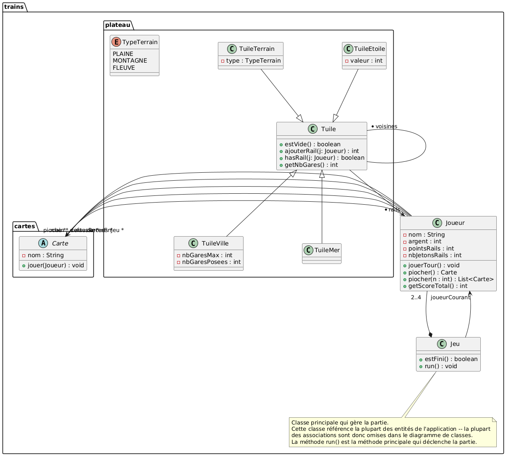
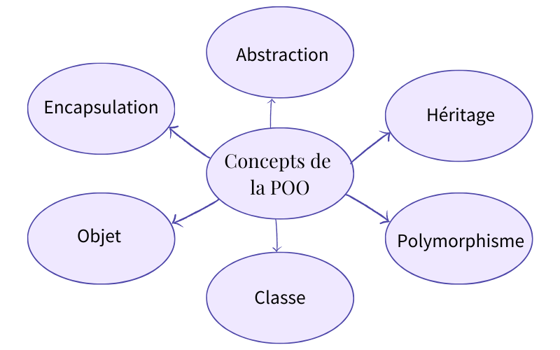
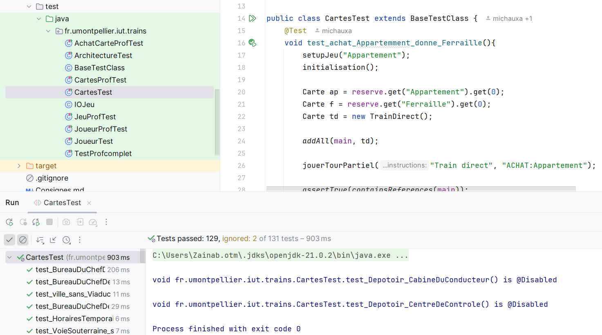

La première phase se résume à programmer le jeu en utilisant la programmation orientée objet. Notre premier défi a été l'analyse de diagrammes de classe particulièrement complexe, qui a nécessité une compréhension des relations entre les différents composants du système. Mais nous devions également comprendre les règles du jeu, et le fonctionnement des cartes et du plateau.
Phase 1 : Développement du jeu


Cette phase nous a permis de mettre en pratique les
Une attention particulière a été portée à la qualité du code à travers la création de tests. Cette pratique nous a permis de valider notre implémentation et d'assurer la fiabilité de nos développements.

A propos du projet
Versionning : GitLab
Equipe : 2 personnes
Outils de développement : Java
Durée du projet : du 25 mars au 28 avril 2024, 1 mois
Communication : GoogleDocs, CodeWithMe de IntelliJ